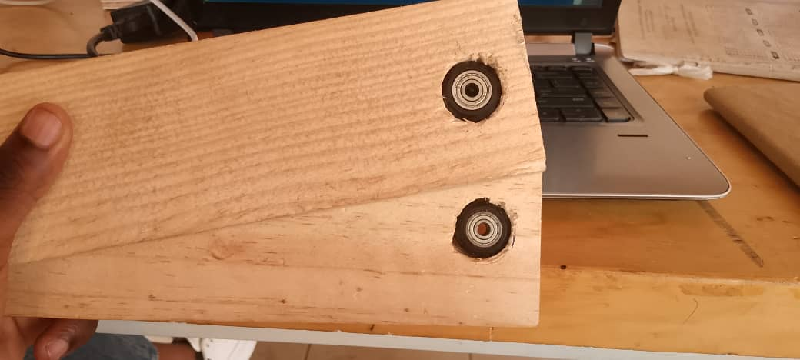

Manzi A. Vladimir

Contacts:
Email: manziatistidevladimir@gmail.com
Phone: +250787032661
Maisha Aline

Contacts:
Email: alinemayisha@gmail.com
Phone: +250798501065
Email: manziatistidevladimir@gmail.com
Phone: +250787032661
Email: alinemayisha@gmail.com
Phone: +250798501065
This project focuses on maximizing solar energy output. It uses a simple solar panel but with an added feature — it automatically tracks the sun’s movement from sunrise to sunset. The system uses light sensors and a small motor to rotate the panel toward the direction of the strongest sunlight. In addition, the solar panel’s performance will be monitored through IoT (Internet of Things), allowing data such as voltage, current, and power output to be viewed remotely on a computer or smartphone. Compared to regular fixed solar panels, this design produces more energy and provides real-time monitoring and analysis.

How it works :
This solar panel will track the sun with the use of LDRs basing on the comparision
the output of these LDRs that are inputs
to the ESP32 in terms of resistance. After that they command to the servo motor to rotate while tracking
the sun.
We will also power our circuit with the use of battery and we will need battery charging module in order to monitor our battery well.
We will also measure the current, voltage and power being produced by the solar panel and publish these values to adafruit IO dashboard for monitoring purpose.
This project have different parts.
>Solar tracking system
>Current measuring
>voltage measuring
>Power measuring
>Battery charging & percentage
>Publishing value
>Hardware & Mounting
We made this system using:
> Two Light Dependent Resistors(LDRs),
> One Servo motor
> ESP32
> Two 220 ohms resistors
We started by connecting the LDRs with resistors to create the analog input to be measured by using the voltage divider rule. This helps to measure the amount of resistance using the analog or input arduino pins.

Here is how the solar panel looks with the LDRs

Here we used Current sensor to measure the current being drawn by the Solar panel.
The solar panel anode(+) passed through current IN terminal and comes out from
current OUT terminal.

After that, it goes to the load, but cathode(-) goes direct to the load from the solar panel.

Then, to measure the current we connect positive(+) and negative(-) to the sensor
and the signal pin goes to the input pin of a micro controler

After all of these, We assembled them in proteus to ensure its functionality.
But we used arduino uno because
it is hard to use ESP32 in proteus. We also used battery in place of solar panel as power source

Here we used voltage devider to reduce the voltage so that the micro controler can handle it.

And after we used calculations to re-write it as the real value.

Here, we used the simple formula to calculate the Output power
coming out of the solar panel.
We multiplied CURRENT Value
being obtained to the VOLTAGE value being obtained

Here, we will use the voltage divider law as we sed it on voltage calculation.
We will take the positive and negative from the battery and direct it to a voltage divider
in order to let the micro-controller handle that voltage easily and then the output will
connected to the input pin to measure it and then display it on the adafruit dashboard.

This is how it look charging a battery using a solar panel
.jpeg)
This red LED means that the battery charging is still in progress. When it is full the LED lights blue.

This is the way it is being monitored on the adafruit dashboard

We tried to publish the values we gained in the hardware components, started by publishing the
voltage using the delay function and we discovered that we non updated voltage on dashboard due
to the delay function.

After that we decided to use the "Millis function" in order to don't block the functionality of the
other codes, it really worked well

And the dashboard kept updating every 10s it looked like this:

This is the video showing the progress of publishing the values
We designed two wooden stick to hold our solar panel during the rotation.

We found that we can easily rotate and hold the panel with the help of bearings, because
the servo motor can hold the solar panel it's self.


We also attached the printed plastics on the solar panel in order to connect it to the bearings.
And the overall holding system looked like this.

Here we faced the challenge of waiting for the bearings for too long.
which made us delay in the assembly of the solar panel tracking system.
But after we found them, we successfully inserted them into the wooden sticks

Click below to download the Arduino code (.ino file):
Download Arduino Code